作业三：字符识别：从图片中计算加减算式结果
姓名：欧阳鸿荣
学号：161220096
手机：13055644369
1. 实现细节
1.1 综述
以下是本次实验的代码文件及其功能
| 文件名 | 功能 |
|---|---|
| my_test | 字符识别和算式计算的测试入口 |
| my_digit | 对于输入图片，识别图片中的数字 |
| my_operator | 对于输入图片，识别图片中的运算符号 |
| my_calculator | 对于形如测试样例的图片，计算算式的计算结果，将结果写入图片并输出图片 |
| clear_boundary | 对于给定图片，截取其最小外接矩形内的图像并返回 |
| caculate_line | 对于一行算式，识别其算式并返回结果 |
| test_ocr | 测试my_digit和my_operator识别的脚本 |
下面分别介绍本次实验的实现：
1.2 输入图片的性质：预处理的前提
根据实验要求，本次实验的输入图片都是形如如下格式的图片：

可以看出，待计算输入图片都是形如10*3的表格状，每个矩形框内是一个算式，格式都是：
- 每行包含三个式子，一张图片共有10行；
- 图片中仅包含加法和减法运算，且每个运算数都是小于10的自然数；
- 给定的图片保证加法运算结果小于10，减法运算结果非负。
可见本次实验已经大大简化了难度，因此根据该固定格式可以对输入图片预处理。
下面首先介绍一个对图片预处理的函数：clear_boundary
1.3 clear_boundary：定位关键图像所在的最小矩形
clear_boundary.m 函数的功能是：对图像进行预处理，去除其边缘，求出其最小外接矩形，定位在实验中我们所需的关键图像，而清除一些无效信息。该函数的一个应用如下图所示：
该函数的所用的算法思想如下：
- 首先，函数起作用的前提是图像是一个二值图像
- 在某个方向上，（以水平方向为例）按照列进行扫描，寻找在该列中是否有logcial值为0的像素点
- 则得到列角度上像素是否存在的exist数组，呈条形码状分布
- 对exist进行扫描，得到关键像素的起始和终止点，并将这部分的图片截取出来
- 对另一个方向运用算法
下面是其水平方向按列扫描实现的代码：
xxxxxxxxxx[m,n] = size(Im);% 先去边框，试探空格exist = [];for i = 1:n tmp = find(Im(:,i)== 0); exist(i) = ~isempty(tmp);end% 分块part = [];sflag = 0;eflag = 0;for i = 1:length(exist) if(exist(i)==0 && sflag ==0 && eflag == 0) continue; elseif(exist(i)==1 && sflag ==0) sflag = i; elseif(exist(i)==0 && sflag ~=0) part = [part;[sflag,i]]; sflag = 0; endend% 去边框后的图left = part(1);right = part(end);1.4 my_calculator：对输入图片进行处理并返回结果图片
观察到测试样例图片的表格外缘都有一定间隔，因此对于输入图片，首先将其二值化，并使用clear_boundary清除其外缘，保证函数的处理总是对于一个标准的表格进行处理。
xxxxxxxxxxIm = input_image;RGB = Im;Im = im2bw(Im); %二值化Im = clear_boundary(Im); %清除图片边缘，求最小外接矩形L = size(Im);[m,n] = size(Im);然后，对于预处理后的图片，按照10行3列的格式，对图片进行分割，并且将分割后的结果以cell数组的形式存储
xxxxxxxxxx%对图片按照方格进行划分max_row = 10; %行数max_col = 3; %列数height = floor(L(1)/max_row); %每个算式方格的高度width = floor(L(2)/max_col); %每个算式方格的宽度seg = cell(max_row,max_col); %存储分割后每个位置的算式图片%分块for row = 1:max_row for col = 1:max_col seg(row,col)= {Im((row-1)*height+1:row*height,(col-1)*width+1:col*width,:)}; endend 之后，通过caculate_line函数，得到每个算式矩形的结果和其计算结果在图片中应该写入的偏移量
xxxxxxxxxx%分别计算每个方格算式的结果res = []; %存储计算结果start = []; %记录结果相对于方格的偏移量for i=1:max_row*max_col [a,b] = caculate_line(seg{i}); res = [res,a]; start = [start,b];end最后，通过insertText函数将结果写入原图，并且修正其结果在图片中的位置，使得结果出现在等号后的恰当位置
xxxxxxxxxx%将结果写入原图并返回for row = 1:max_row for col = 1:max_col index = (col-1)*max_row + row; scale = max_col*10; % 误差容许的缓冲量 x = width*(col-1)+start(index)+n/scale; %结果的x坐标 y = height*(row-1)+m/(scale-1); %结果的y坐标 content = int2str(res(index)); %算式的计算结果 off = m/(max_row*5); %写入图片结果的偏移量 position = [x,y+off]; %算式应该写入的位置 RGB = insertText (RGB,position,content,'AnchorPoint','LeftCenter','FontSize',60,'BoxOpacity',0); endend output = RGB;1.5 caculate_line：对于包含一个算式的矩形，计算其结果
在my_calculator函数的介绍中有提到，将预处理后的图片分割成30个包含算式的小矩形，如下图：
可以看出，分割的结果由于表格边界的存在并不是很理想，存在边框，caculate_line便是对形如上图的图片进行计算并返回结果和结果位置的函数。
首先，有一个比较激进的假设：边框占图片宽度的10%。然后对图片进行截取，得到不包含黑色边框的干净图片。
xxxxxxxxxxIm = img;[m,n] = size(Im);% 先去边框border = 10; %边框所占百分比left = floor(m/border);right = floor(m-m/border);up = floor(n/border);down = floor(n-n/border);% 去边框后的图Im = Im(left:right,up:down);[m,n] = size(Im);然后，同clear_boundary的思想，对图片列的进行扫描（实际上clear_boundary函数从这里诞生）。由于图片的格式固定，因此对扫描后的坐标进行处理，分为 “数字 符号 数组 等号 空白”五部分，并存储在seg中，并同时得到结果应该出现在图片中的偏移量start，以便在my_calculator写入。
xxxxxxxxxxlast = part(4,2);part = [part;[last+offset+1,last+offset]];start = last+ offset + 1;for col = 1:5 seg(1,col)= {Im(1:height,part(col,1)-offset:part(col,2)+offset,:)}; end处理后的结果如下：

此时，我们便得到了分割后的数字和符号。于是便可以通过my_operator和my_digit函数对其分别进行识别，从而得到算式的计算结果，结果存储在res中返回。同时在控制台打印出结果，以便调试。
xxxxxxxxxxif my_operator(seg{2})=='+' res = my_digit(seg{1})-'0' + my_digit(seg{3})-'0'; display(strcat(my_digit(seg{1}),'+' ,my_digit(seg{3}),'=',int2str(res)));else res = (my_digit(seg{1})-'0') - (my_digit(seg{3})-'0'); display(strcat(my_digit(seg{1}),'-' ,my_digit(seg{3}),'=',int2str(res)));end1.6 my_operator：对于输入图片，识别图片中的运算符号
该函数用于识别图像中的符号，识别的目标是加号，减号，等号共三个符号。函数的输入是单张运算符图片，输出是这张图片所表示的运算符。函数返回类型应是字符类型。
对于符号的识别，由于识别的目标只有三个符号，因此考虑从符号的特征进行识别，例如，对于测试样例中的三个符号，使用clear_boundary函数对其预处理后，可以得到如下图像：

对于规则的运算符号，它们的图像特征和区别还是较为明显的的。这里选取像素密度来进行判别。所谓像素密度，指二值图像中0值像素点数占总像素数的百分比。而在经过与处理后，上述三个符号的像素密度分贝为为：
| 符号 | + | - | = |
|---|---|---|---|
| 像素密度 | 0.2504 | 0.9962 | 0.5714 |
不同符号的像素密度差别较为明显的。因此可以考虑按照像素密度对其进行判别，同时根据图片比例辅以判断。
xxxxxxxxxxfunction output = my_operator(input_image)img = input_image;img = clear_boundary(img);[m,n] = size(img);cnts = 0;for i=1:m for j=1:n if img(i,j)==0 cnts = cnts+1; end endendout = cnts/(m*n);ra = m/n; %比例if out>0.8 || ra < 0.3 output = '-';elseif out < 0.4 && ra > 0.7 output = '+';else output = '=';end1.7 my_digit：对于输入图片，识别图片中的数字
对于数字的识别，这里给出两种方案，在实际使用时可以修改函数中的代码选择要使用何种方案。默认使用匹配法，该法识别速度快但是对数据集存在过拟合，适用性较差，若遇到问题可以采用函数法：
xxxxxxxxxxfunction output = my_digit(input_image) output = true_digit(input_image); %output = func_digit(input_image);end(1) 函数法：使用matlab的ocr函数直接识别
OCR（Optical Character Recognition，光学字符识别）是指电子设备（例如扫描仪或数码相机）检查纸上打印的字符，通过检测暗、亮的模式确定其形状，然后用字符识别方法将形状翻译成计算机文字的过程。
在较新的matlab版本（未查到准确资料，但是根据文档，最晚在R2014a版本中即已经引入）中有ocr函数，可以对图片进行光学字符识别，设置参数TextLayout和CharacterSet后，对于给定图片即可达到良好的识别效果。
x
function [output] = func_digit(input_image) % 使用 word = ocr(input_image,'TextLayout','Block','CharacterSet','1234567890'); if isempty(word.Words) output = word.Words; else output = word.Words{1}; end end(2) 匹配法：基于像素点的匹配对数字进行识别
匹配法是一个很基本很朴素的方法：对于截取出来的符号，与标准的数字模版进行匹配。返回匹配相似度最高的模版所代表的数字。相比于函数法，这个方法的泛化能力较差，但是对于特定字体的数字，可以做到快速识别。
首先，从测试样例中截图，得到数字的图片，置于assert/image/numbers中
然后，利用genNormal函数，使用clear_boundary函数对数字去除边缘，进行切割定位，得到标准模版
xxxxxxxxxxfunction genNormal() for i=0:9 address = strcat('../asset/image/numbers/',int2str(i),'.png'); input_image = imread(address); input_image = im2bw(input_image); I = clear_boundary(input_image); [m,n] = size(I); subplot(10,2,2*i+1);imshow(input_image); subplot(10,2,2*(i+1));imshow(I); I = clear_boundary(input_image); imwrite(I,strcat('../asset/image/normal/',int2str(i),'.png')); p = pblack(I); endend标准模版，置于assert/image/nommal中
在true_digit函数中，对于输入的图片，首先将其去除边缘，然后，使用imresize标准化为40*25的数字图片。
xxxxxxxxxxfunction [output] = true_digit(input_image)%TRUE_DIGIT 用匹配的方法来匹配数字% 此处显示详细说明 I = clear_boundary(input_image); I = imresize(I,[40,25]); %...寻找最大匹配 output = res + '0';end接着，对于每个样例，与标准化的模版一一比较，返回匹配相似度最高的模版所代表的数字
xxxxxxxxxxfunction [output] = match(A,k) normal = imread(strcat('../asset/image/normal/',int2str(k),'.png')); B=imresize(normal,[40,25]); if ~islogical(A) A = im2bw(A); end if ~islogical(B) B = im2bw(B); end cnts = 0; for i = 1:40 for j=1:25 if A(i,j)==B(i,j) cnts = cnts+1; end end end output = cnts;end2. 结果
2.1 实验设置
实验环境为 Matlab R2018a，代码放在code目录下。其中my_test.m为从图片计算加减算式结果测试的入口。而对于数字和符号的识别测试，可以用test_ocr.m进行测试。下面讲述如何对代码进行测试。
2.11 图片计算测试的设置
该环节测试的入口在my_test.m中，测试代码如下。只需修改文件路径即可对不同测试样例进行测试。控制台会打印对每个算式的处理结果，同时，测试结果会将处理前后图片对比展示输出在Figure窗口，并且可以通过修改代码选择将结果存储在文件系统上。
xxxxxxxxxxclc; clear all;imgInput = imread('../asset/image/example.png');imgOutput = my_calculator(imgInput);subplot(1, 2, 1);imshow(imgInput);subplot(1, 2, 2);imshow(imgOutput);% imwrite(imgOutput,strcat('../asset/image/5_result.png')); 2.12 符号和数字的识别测试
该环节测试的入口在test_ocr.m中，分别有两个测试函数：
| 测试函数名 | 测试函数功能和使用 |
|---|---|
| testOperators | 测试符号的识别，修改输入文件路径，控制台输出识别结果（字符类型） |
| testNumbers | 测试数字的识别，修改输入文件路径，控制台输出识别结果（字符类型） |
| 同时，通过修改my_digit中的方法函数可以选择测试匹配法和ocr函数法的结果 |
2.2 实验结果
2.21 图片计算测试的实验结果
如果输入图片名是“1.png”，那么在image文件夹中相应的输出图片名字应该是“1_result.png”。
对于所给的6张测试图片进行测试，结果如下：
example.png
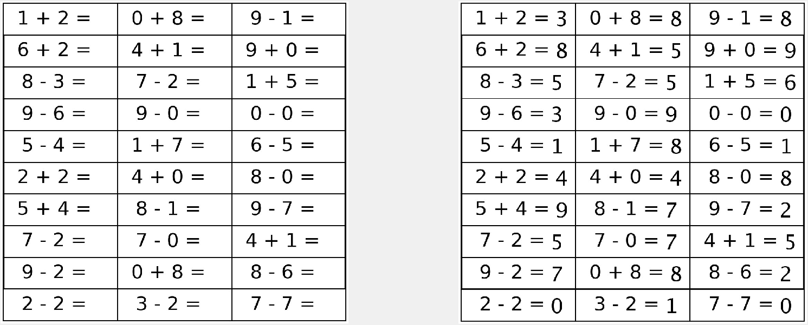1.png
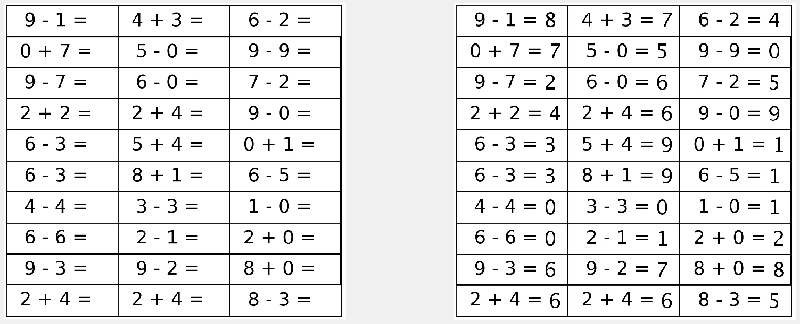2.png
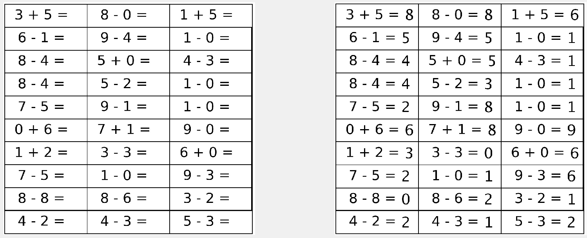3.png
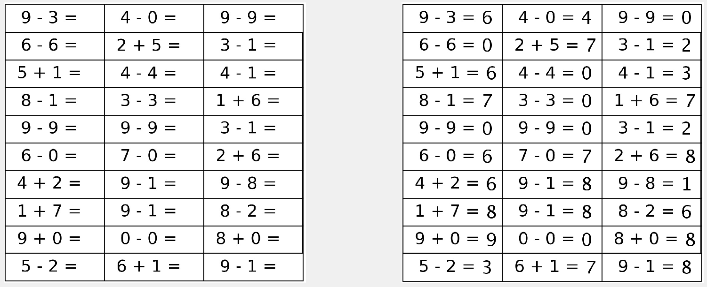4.png
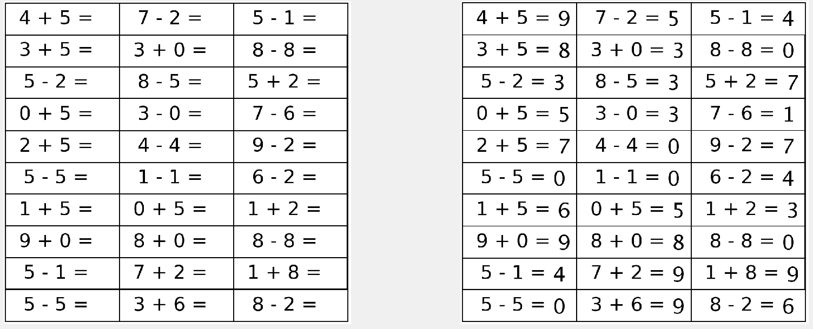5.png
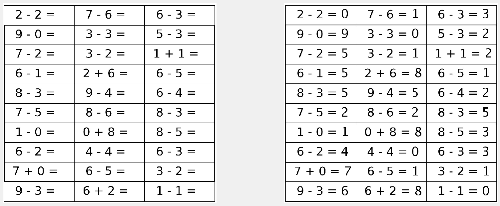
2.22 符号和数字识别的实验结果
(1) 符号的识别：
印刷体的识别：
加号
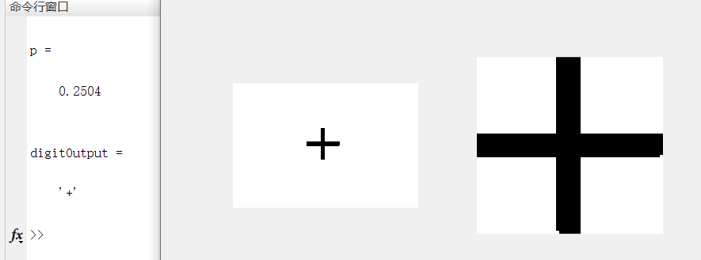减号
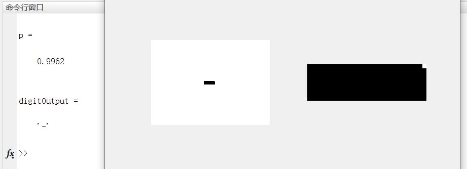等号
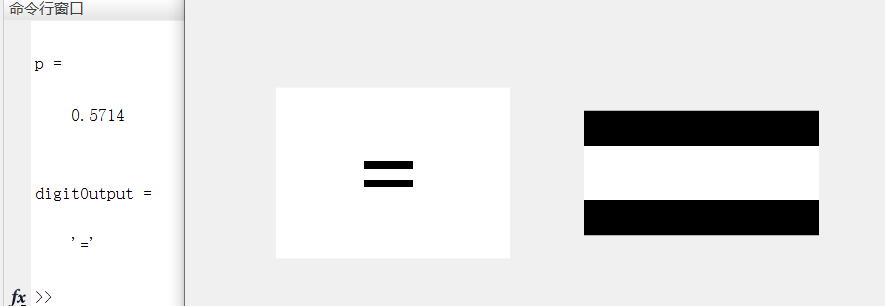
手写体的识别：
加号
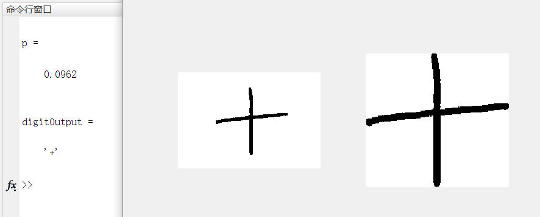减号
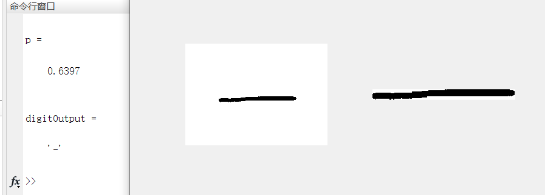等号
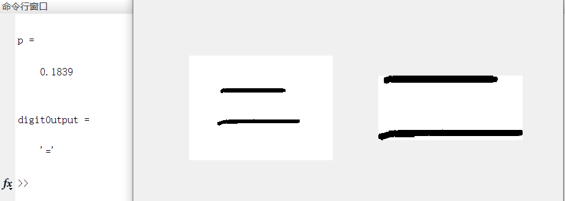
可以看出，用像素比例结合比例，对于符号的识别效果较好，且对于鼠绘符号也能做到一定精度识别。
(2) 数字的识别：
对于数字的识别，对于匹配法，由于是在训练集上进行测试，因此可以有很好的效果
对于函数法，同样也有很好的效果。这里主要测试对于其他字体和手写体的识别情况。
有鼠绘手写数据集置于assert/image/write下，结果如下：
匹配法：识别率80%，4和5识别失败
函数法：识别率100%
可以看出，匹配法的鲁棒性还是较差，对于手写或者其他字体，需要字体与训练集形状相似才能匹配成功。相较之下，函数法的识别率就很高，这也符合常识，毕竟是身经百战的库函数。
因此最后使用库函数，构造了一张手写的样例进行测试：
可以看到，在使用库函数的前提下，对于手写的数字，计算正确率有，当然，这个样例的1不符合一般的手写体，而是尽量与测试样例靠拢，不过依然可以看出库函数的识别效果还是挺好的。
3. 参考资料
2.Matlab官方文档：Recognize text using optical character recognition